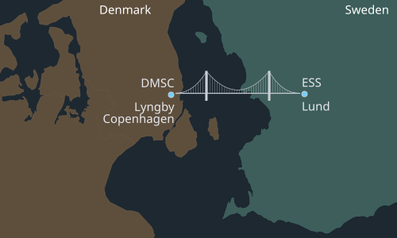
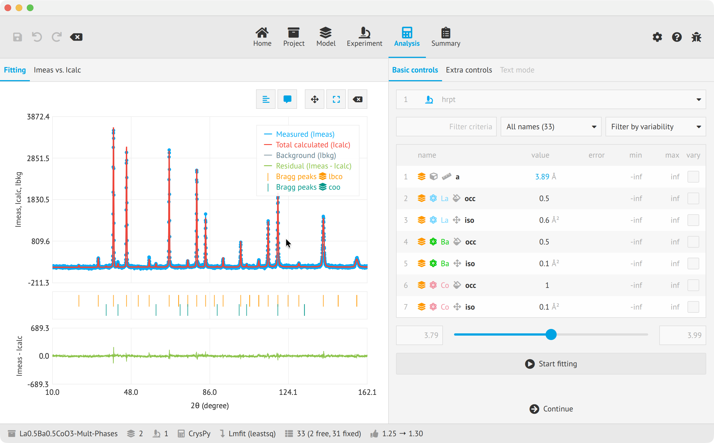
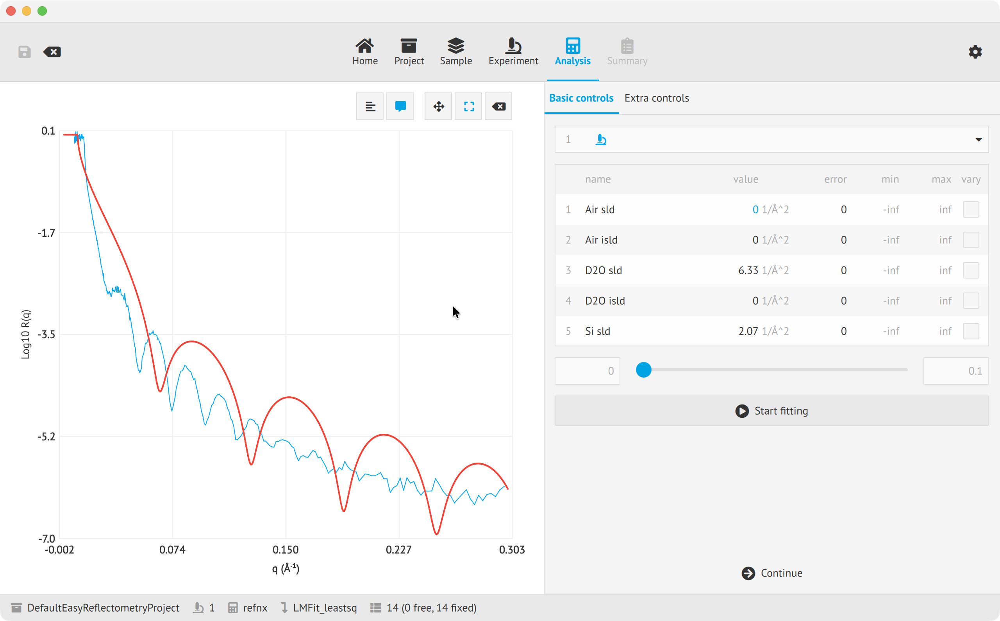
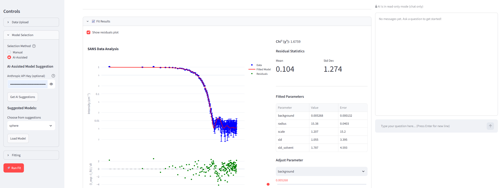

GUI approaches at ESS
Software for the science programme, from proposal to analysis
European Spallation Source (ESS)
Data Management and Scientific Computing (DMSC)
NOBUGS 2026 · GUI Workshop · 21 Sep 2026
One facility, two host countries
ESS is in Lund. DMSC is in Lyngby, near Copenhagen.

The integrated data pipeline
Different user interfaces support each stage of the data pipeline.
UI technologies in a nutshell
Qt for desktop applications. Web tools for other stages.
Desktop
Qt Widgets · PyQt6
 NICOS
NICOS
nicos-controls.org
MLZ
Beamline control GUI
ESS uses custom panels
One layout per instrument
Qt Widgets · PySide6
 SasView
SasView
sasview.org
many facilities
Small-angle scattering analysis
A new toolkit means a rewrite
Adopted with the project
Qt QML · PySide6
 EasyDiffraction · EasyReflectometry · EasyImaging
EasyDiffraction · EasyReflectometry · EasyImaging
easyscience.org
U GöttingenJCNS at MLZChalmers
Declarative UI in QML, separate from Python code
EasyDynamics, EasyShapes and EasyTexture prototypes
Prototypes become products without a rewrite
Web
ipywidgets · Voilà
 essreduce
essreduce
scipp.github.io/ess/reduce
STFC
Generated from a scipp workflow
Documented, not deployed at ESS
Works inside notebooks
Streamlit · Python
SANS-webapp
github.com/ai4se1dk/SANS-webapp
AI4SE1DK
SANS fitting
AI assistant built in
Little GUI code to maintain
Angular · TypeScript
SciCat
scicatproject.org
PSIMAX IV
Data catalogue
Find and access datasets
Browsed from any institution
React · TypeScript
User Office
github.com/UserOfficeProject
STFCELIDiamond
Proposal submission
Facility access
Used before anyone arrives
Challenges and controls
Most challenges are organisational. Beamline and accelerator controls use different UI approaches.
Organisational
Little is shared between groups
Each group picks its own stack
GUI expertise stays inside each group
No common review or style practice
The same people do backend and GUI work
Technical
Scientific plotting rarely supports QML
Embedding plots takes extra work
Embedded plots may not match the UI style
Built-in QML charts lack some features
They would need work for scattering data
ESS maintains a NICOS fork
We aim to converge with the main project
Beamline vs accelerator
Beamline GUIs come from ECDC in DMSC
One shared NICOS client
Phoebus (Java desktop) for EPICS screens
Accelerator GUIs come from elsewhere
Another division, another stack
No UI components in common
Reusable UI components
Shared QML components across EasyScience applications.
github.com/easyscience
What we share
The workflow bar, the panels and the controls
Used by every EasyScience application
Shared only within EasyScience
Other ESS projects use their own components
How we document it
Five examples in the repository
The applications are the main reference
The docs site is set up but not written
Next: write the docs and update them each release


UI generation and AI assistants
An AI assistant is available today. Two UI generation ideas are not built yet.
UI generationideas
Two directions we are considering
We could generate data reduction notebooks for Voilà with AI
The workflow already describes the parameters
We could assemble a new EasyScience GUI with AI
Using our shared components and existing applications as examples
AI assistants
SANS-webappgithub.com/ai4se1dk/SANS-webapp
Suggests a scattering model from the data
Answers questions about the fit
Sets parameters and runs the fit when asked
Its tools are off until you switch them on
